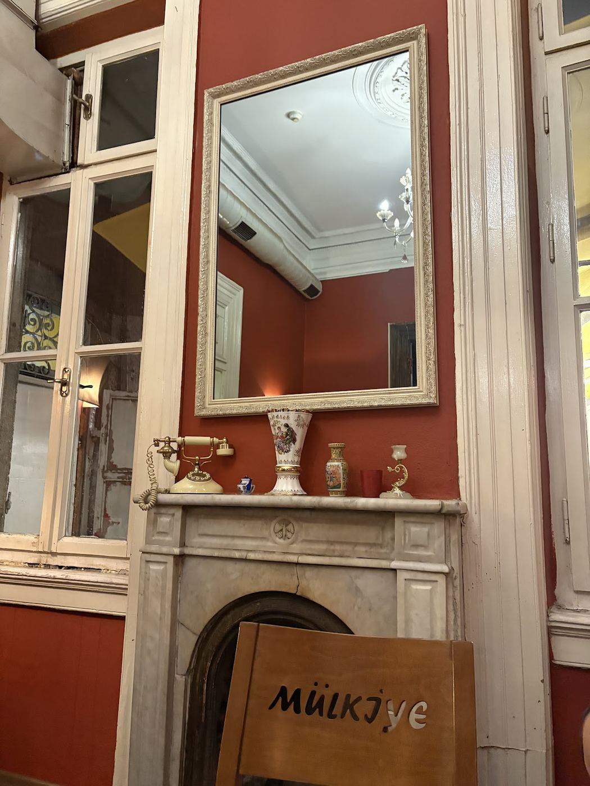
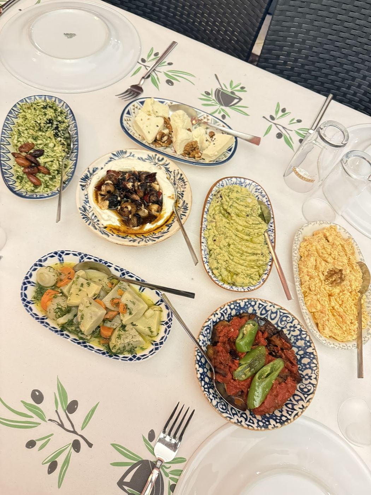
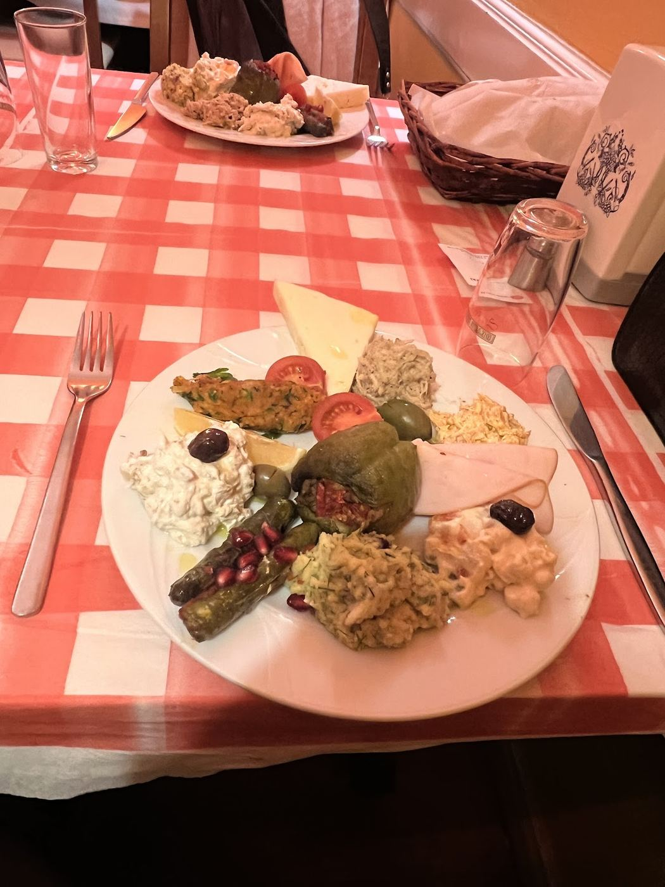
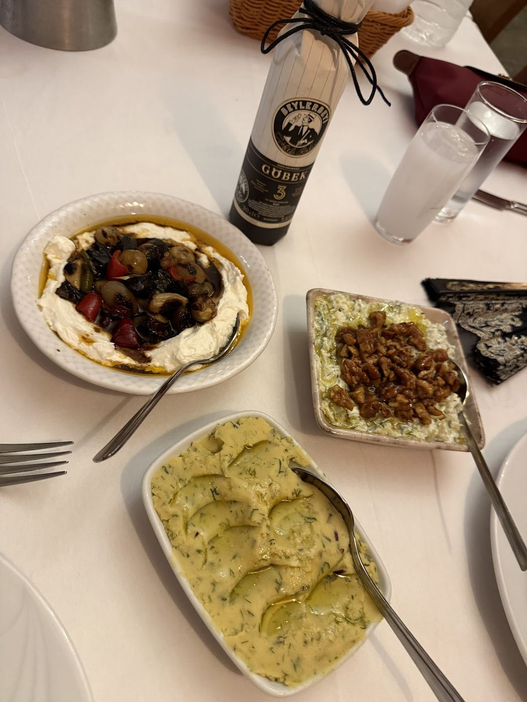
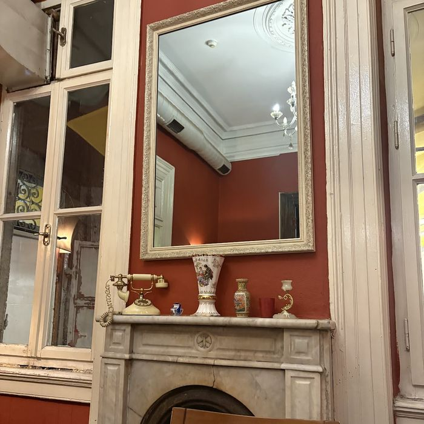
Böyle salonlar artık az kaldı.
Kiremit rengi duvarlar, tavanda kristal avize, kemerli geçitler ve ağır perdeler. Masalar beyaz keten örtülü, tabaklar mavi desenli. Sofra bu salonun ölçüsünde kurulur — aceleye gelmez.
Alsancak'ın arka sokaklarında, eski bir konağın zemin katında.
Dört perdelik bir akşam
Tabaklar ortaya gelir, sıra bozulmaz. Masa ne kadar kalabalıksa sofra o kadar uzar.
-
01
Mezeler
Mavi desenli tabaklarda, masanın ortasına yayılır.
-
02
Ara sıcaklar
Mutfaktan sıcak sıcak gelir; rakı bu sırada devreye girer.
-
03
Ana yemek
Ağır ateşte pişmiş et, tencerede geldiği gibi paylaşılır.
-
04
Tatlı
Sofra dağılmadan, kahveyle birlikte.
Masanın ortası boş kalmaz
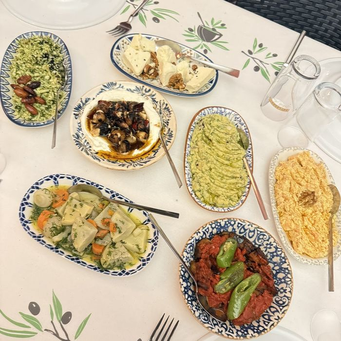
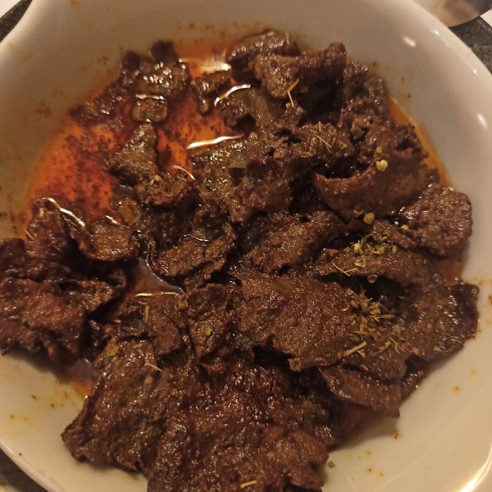
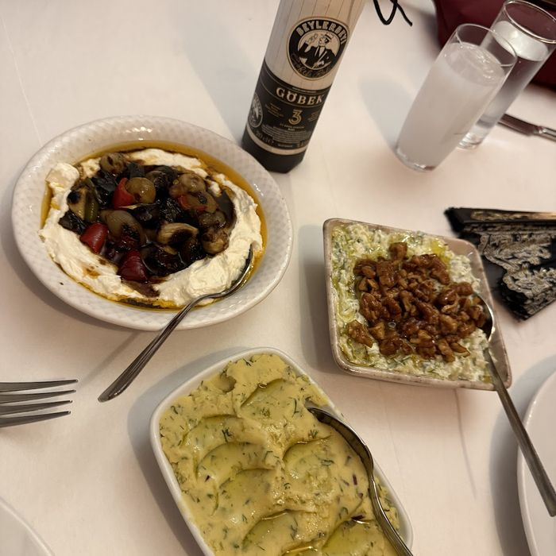
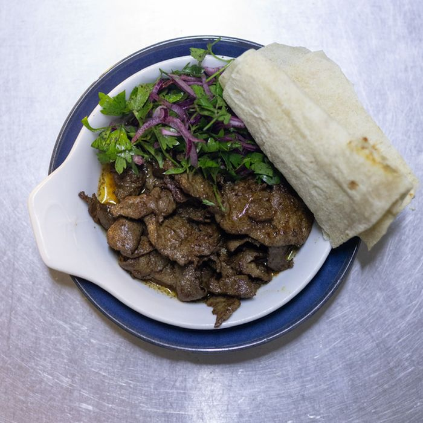
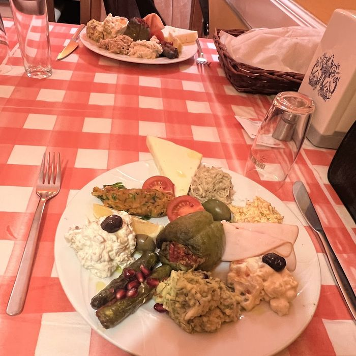
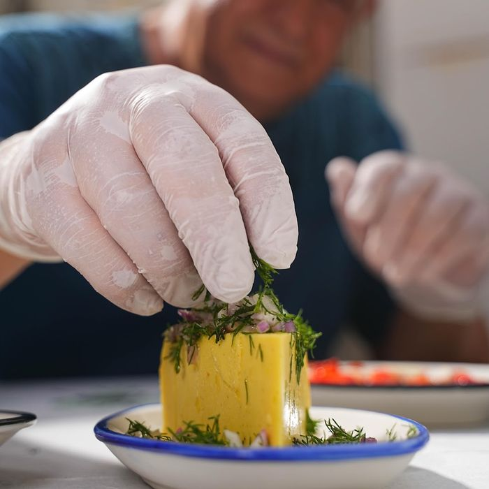
Tabak elle bitiyor
Sonuncu dokunuş mutfakta, tabak salona çıkmadan yapılıyor. Bu ölçekte bir yerde her tabağı aynı elin bitirmesi mümkün — ve burada öyle oluyor.
Gelenler bir daha geliyor
Google'daki değerlendirmelerin ortalaması beşe çok yakın. Bu ölçekte bir yer için alışılmış bir puan değil.
4,9 56 Google değerlendirmesi
Alsancak, İzmir
- Adres Alsancak, İzmir
- Saatler 16:00'dan itibaren Akşam yemeği servisi
- Telefon 0542 624 24 68
- WhatsApp Yazarak ayırtın
Kalabalık sofralar ve özel günler için önceden aramanızı öneririz.